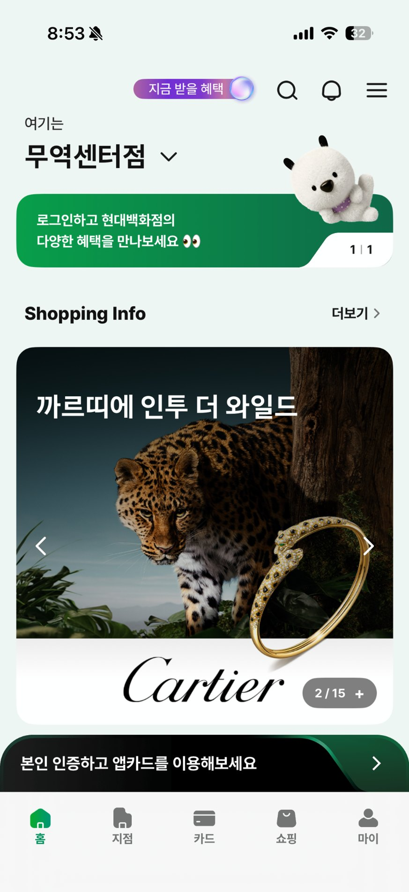
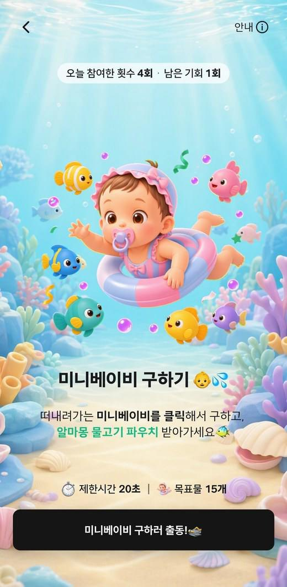
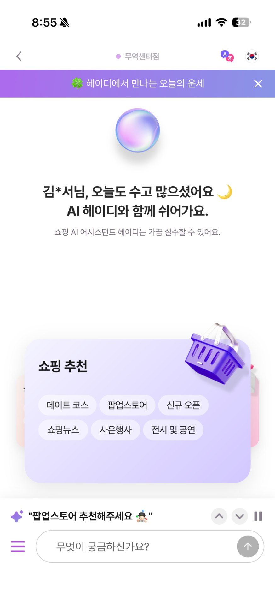

Frontend
React, TypeScript, Vite
JSP / JSTL, WebView, JS–Native Bridge
약 400억 규모 더현대 Hi 리뉴얼의 앱 대응개발부터
AI 캠페인 플랫폼까지, 화면·서버·운영을 연결합니다.
현대백화점 앱과 PLAYLOOP



쇼핑부터 캠페인 참여까지, 고객이 만나는 서비스
통합 계정 전환 대상 규모 · 약
캠페인 제작 리드타임
앱 신규 가입자의 더현대 Hi 동시가입 · 약
더현대 Hi 전체 리뉴얼 규모
현대백화점 앱 대응개발 참여
화면에서 시작한 문제를
서버와 데이터까지 연결해 해결합니다.
현대퓨처넷에서 현대백화점 앱과 홈페이지를 개발·운영하며, 고객 화면부터 서버와 데이터 처리까지 연결하는 경험을 쌓았습니다. 약 200만 회원 대상 H.Point 통합 계정 전환과 약 400억 규모 더현대 Hi 리뉴얼의 현대백화점 앱 대응개발에 참여했습니다. 인증·약관·결제뿐 아니라 예약·웨이팅, SSO, 채팅, 비대면 반품까지 여러 시스템이 맞물리는 흐름을 구현하고 정합성을 확보했습니다.
React·iOS 화면 개발과 Spring API, Kafka·배치 처리를 함께 다뤄 화면에서 발생한 문제를 서버와 데이터까지 추적하고 해결하는 것이 강점입니다. 요구사항 분석부터 구현·테스트·배포, 운영 개선까지 맡으며 고객의 이용 흐름과 서비스 내부의 처리 구조를 함께 살핍니다.
기능을 출시한 뒤에도 운영 과정의 병목과 반복 업무를 찾아 개선합니다. 광고 유입부터 리워드 지급·알림 발송까지 자동화하고, 배치 실패 재처리와 장애 알림 체계를 구축했습니다. PLAYLOOP에서는 React 제작 어드민과 Spring API, AI 이미지 생성을 연결해 팀과 함께 캠페인 제작 기간을 14일에서 1일로 단축했습니다. 새로운 기술을 실제 업무 흐름에 적용해 고객의 이용 과정과 운영자의 작업 방식을 함께 개선합니다.
고객 접점부터 데이터 처리와 배포까지,
실무에서 사용한 기술입니다.
React, TypeScript, Vite
JSP / JSTL, WebView, JS–Native Bridge
Swift, UIKit, SwiftUI
RxSwift, Combine, React Native, TestFlight
Java 18, Spring, Spring Boot
Spring Batch, JPA, REST API, JWT / OAuth2
Oracle, Redis, Kafka
AppsFlyer, H.Point API, 그룹웨어 API
Azure OpenAI, OpenCV, Teams Workflows
Bitbucket, Bamboo, Unix / Linux, CI/CD
현대퓨처넷 · 2021.10–현재
현대백화점 서비스 개발·운영
PLAYLOOP을 기획 착수 후 3개월 만인 8월 운영 배포하고, 캠페인 제작 리드타임을 14일에서 1일로 단축했습니다.
약 200만 회원 대상 H.Point 단일 계정 전환에 참여하고, 인증·약관·세션과 회원 상태 처리를 구현했습니다.
광고 유입·고객 행동부터 리워드·알림 발송까지 이어지는 마케팅 처리와 운영 자동화를 구축했습니다.
요구사항 분석부터 화면·API 개발, 통합 테스트와 운영 배포까지 홈페이지 리뉴얼 전 과정에 참여했습니다.
10월 입사 후 현대백화점 서비스 개발·운영 경험을 쌓으며 웹, 모바일, 서버와 운영 자동화로 담당 범위를 넓혀 왔습니다.
국민대학교 소프트웨어학과 · 편입 및 졸업
2019.03–2021.08
한림대학교 전자공학과 · 재학 후 편입
2015.03–2019.02
정보처리기사
2021.06.02 취득
담당 역할과 설계 판단, 운영 결과를 정리했습니다.
아래 제목을 선택하면 해당 프로젝트로 이동합니다.
AI 캠페인 제작, 14일 → 1일
제작 14일 → 1일
캠페인마다 게임을 새로 만드는 제작 방식이 병목이었습니다. 반복되는 게임 규칙은 모듈로, 달라지는 소재는 AI 생성과 설정으로 분리해 제작·미리보기·게시를 하나의 어드민으로 연결했습니다.
연 약 230건의 앱 이벤트 중 게임형은 0건. 배너 중심 홍보의 CTR은 0.5~1.5%였고, 게임형 캠페인 한 건 제작에 14일과 4개 주체의 협업이 필요했습니다.
게임 규칙을 플러그인 모듈로 정의하고 목표물·장애물·배경·리워드를 캠페인별 설정으로 분리했습니다. 비개발 직군이 6단계 어드민으로 직접 발행하도록 구현했습니다.
2026년 8월 운영 배포를 완료했습니다. 캠페인 제작 리드타임을 14일에서 1일로 단축하고, 사내 스타트업데이 우수상을 수상했습니다.
브랜드 컬러·재질·조명·시점·가독성 기준을 YAML 프롬프트로 정리했습니다. 운영자 입력과 참조 이미지를 조합해 소재를 생성·재생성·저장하도록 연결했습니다.
Java·OpenCV로 가장자리와 연결된 배경을 제거해 내부 유사색을 보존하고, 경계 색 번짐 보정과 용도별 크기·여백 조정을 적용했습니다.
기존 앱의 인증·참여·리워드와 연결했습니다. 초대받은 친구의 실제 게임 시작에 추가 참여 기회를 지급하고 중복 지급을 방지했습니다.
작업 규칙·변경 이력·API 명세를 공유하고, 프론트엔드 5개·백엔드 10개 스킬로 구현·명세 확인·테스트 작성 절차를 정리했습니다.
캠페인 제작 리드타임
한 번 만든 기능을 여러 캠페인에 적용하고,
개발 요청 중심의 제작 과정을 현업의 직접 제작으로 전환했습니다.
약 200만 회원 전환, 동시가입 약 85%
대상 회원 약 200만 명
약 200만 회원 대상 H.Point 단일 계정 전환에 참여하고, 더현대 Hi 동시가입을 구현했습니다. 회원 유형·약관 버전·가입 상태에 따라 필요한 절차를 이어가고 앱과 서버의 처리 결과를 일치시키는 것이 핵심이었습니다.
기존 가입자의 반복 절차를 줄이는 동시에 신규 가입·약관 변경·외부 조회 실패를 구분해야 했습니다. 화면과 서버가 서로 다른 상태를 기준으로 처리하지 않도록 정리가 필요했습니다.
SwiftUI 약관 바텀시트를 UIKit 가입 흐름에 연결했습니다. 서버 상태 분기와 동의 이력·버전 관리를 구현하고, 가입 성공 시 Redis 상태를 갱신했습니다.
현대백화점 앱 신규 가입자 중 더현대 Hi 동시가입 비율 약 85%를 기록했습니다. 가입 경로 데이터와 단계별 로그를 연결해 전환 분석과 오픈 이후 확인을 지원했습니다.
가입 완료 조회 결과를 24시간 캐싱하고 이후 조회에서 최신 상태를 확인합니다. 외부 조회가 무응답이면 기존 캐시를 유지해 일시적인 실패가 상태 변경으로 반영되지 않도록 보완했습니다.
예약·웨이팅, SSO, 결제, 채팅, 비대면 반품 등 두 서비스가 연결되는 주요 기능의 연동과 정합성 확보에 참여했습니다.
금액은 전체 리뉴얼 프로젝트 규모이며, 담당 범위는 현대백화점 앱 대응개발입니다.e현대·카드·H.Point로 나뉜 회원 체계를 단일 계정으로 통합하면서 Java·Spring Boot 인증 API를 설계·구현했습니다. Redis를 활용해 세션·토큰·동의 상태를 관리하고, JWT·Refresh 토큰 재발급과 만료 재인증, 부분 동의·약관 변경 예외를 처리했습니다.
휴대폰·점유 인증과 H.Point API 연동에 3-Key 암호화 정책 및 민감 정보 최소 전달 원칙을 적용했습니다.
Spring Batch 전환과 Kafka 비동기 알림
대용량 단일 SQL을 3단계 파이프라인으로
기존 어드민의 단일 대용량 SQL에서 I/O 과다·락·타임아웃으로 배치 실패가 발생했습니다. 처리 단계를 분리하고 재시도·복구·모니터링을 연결해 야간 통계 배치를 안정화했습니다.
읽음 로그 집계 → 결제 내역 매핑 → 통계 산출·적재의 3단계로 나눴습니다. 인덱스·파티션을 정비하고 페이징, 재시도·스킵 정책, 체크포인트를 적용했습니다.
O365 API의 20 TPS 한계를 고려해 Kafka Queue와 Teams Adaptive Card를 연결했습니다. 이벤트·리워드 실패를 현업과 IT 담당자에게 전파하도록 구성했습니다.
배치 실패 0건 수준으로 안정화하고 처리 시간과 DB 부하를 개선했습니다. 장애 알림은 3초 이내 99.99% 전송 성공률을 기록했으며, 야간 운영의 가시성과 복구 기반을 강화했습니다.
유입·지급·발송, 일 3천 건 이벤트
이벤트 일 3천 건 처리
2024년에는 Deferred Deep Link·AppsFlyer PostBack으로 유입과 리워드 지급을 연결하고 Kafka 기반 처리와 운영 자동화를 구축했습니다. 이어 고객 행동·행사 페르소나를 활용한 AI 타게팅과 현업의 실행 흐름을 구현했습니다.
성별·연령 조건과 파일 업로드 중심의 대상 선정에 고객 행동과 행사 적합도를 반영하고, 유입부터 지급·발송까지 처리 흐름을 연결하고자 했습니다.
Kafka 이벤트 처리, 실패 재처리·Failover와 Redis 캐싱을 적용했습니다. AI 추천 키워드·페르소나·문안을 담당자가 검토하고 실행하도록 어드민을 구성했습니다.
일 3천 건 이벤트의 실시간 처리를 구축했습니다. AI 마케팅 기능은 2024 스타트업데이에서 수상했으며, 이후 오브젠의 마케팅 시스템 구축 프로젝트에도 반영됐습니다.
Teams 봇 3종과 Bamboo·Azure AI 코드 리뷰 파이프라인을 구축해 운영 상태 확인과 개발 검토의 반복 작업을 줄였습니다.
중복 지급·취소·재발송을 고려하고 캠페인 조건, AI 추천 검토, 실행 및 로그 확인을 운영 어드민에 연결했습니다.
인증·브릿지·라우팅 공통화
네이티브 호출과 인증 처리를 화면마다 반복하지 않도록 React·TypeScript·Vite 공용 WebView를 구축했습니다.
기존 서비스 운영을 이어가면서 iOS·Android가 동일한 웹 화면을 사용하는 개발·배포 기준을 마련했습니다.
React Native 리딩과 Mobile API Adapter
HR·근태·복지 등 분산된 사내 서비스를 통합하는 React Native 클라이언트 개발을 리딩했습니다.
하나의 코드베이스에서 사내 기능을 확장하고, 인증·통신 오류의 확인·수정 지점을 명확히 했습니다.
Java 18·Spring Boot 기반 Mobile API Adapter를 설계하고 Oracle·JPA를 연동했습니다. Redis로 토큰 상태를 관리하고, 그룹웨어 API를 HTTPS·JSON 규격으로 표준화했습니다. 클라이언트와 서버의 공통 스켈레톤·오류 처리 기준을 함께 정리했습니다.
AI 사전 검수와 단계별 승인
앱 메인 콘텐츠·팝업·광고배너에 AI 사전 검수와 1·2차 승인 절차를 적용했습니다.
등록부터 게시까지 사전 점검 절차를 마련하고, 오게시 예방과 사후 원인 추적을 지원했습니다.
권한·동의·토큰의 데이터 정합성
고객·기기별 OS 권한, 마케팅 동의, 토큰·접속 상태를 관리하는 API와 데이터 구조를 설계했습니다.
실제 수신 조건에 맞게 발송 대상 선정 기준과 데이터 정합성을 정비했습니다.
고객 경험과 업무 효율을 함께 높이는 개발을 지향합니다.